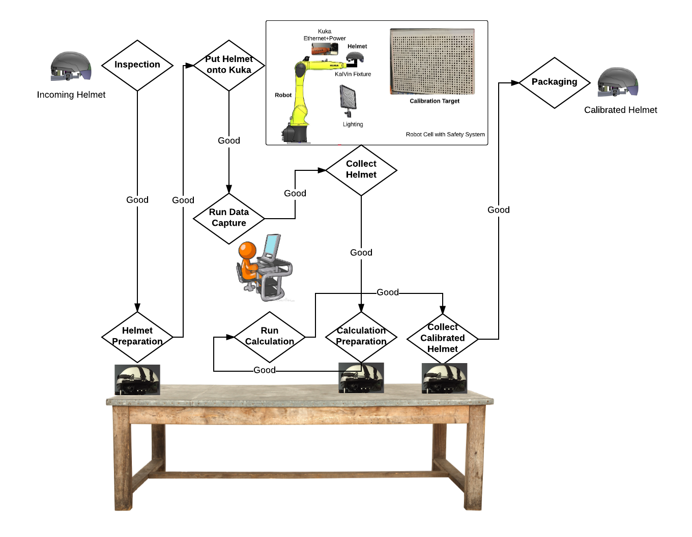

Kalvin Setup
This setup consists of two major parts support calibrating the smart helmet or smart glasses: 1) inside a a robot cell with safety system, we have a kuka robot, calibration targets, fixtures, and 2) calibration station outside the cell.
Kalvin Workflow
The calibration pipeline follows 1) inspecting, putting helmet/glasses onto the kuka robot inside the robot cell, 2) run data capture and store onto helmet/glasses, 3) collect helmet/glasses from the robot cell, 4) run calibration calculation, 5) collect helmet for final QA inspection prior to shipping .
